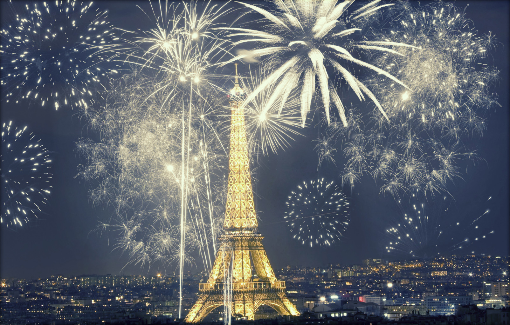

Best Destinations to celebrate New Year in Europe
1.Madeira Islands,Portgual
Where? : From the deck of your cruise ship or from the port of Funchal, the fireworks is so huge that you can not miss it. Why? : The famous fireworks display, officially recognized by the Guinness World Records, in 2006, as the largest display of fireworks in the world. This magnificent scenario, of rare beauty, is simply unique, with thousands of multi-coloured lamps decorating the amphitheater of Funchal, transforming it into a grandiose stage. As the clock strikes twelve, on the 31st, the sky is lit up with colour, light and hope in a new year that is just beginning. Don’t miss it and come to live up this event in Madeira!
2. London,England
Where? Everywhere! Why? London is a special place at the turn of the year. The city is lit up and establishments across the capital will pull out all the stops to make this New Year’s Eve in London a memorable one. So, get your nearest and dearest together and say cheers to 2019. At midnight on New Year’s Eve, London’s night skies will be a blaze of light and colour with a display of stunning pyrotechnics from the river on London’s famous South Bank, presented by the Mayor of London and Unicef. London continues to usher in the New Year on 1 January with the New Year’s Day Parade. This year marks the 30th annual parade to march through London and there will be 8,500 performers representing 20 countries world-wide and from across the London Boroughs, including marching bands, cheerleaders, clowns, acrobats and much more.
3.Paris,France
Where ? On a boat Why? The Eiffel Tower, the Seine, the bridges of Paris… a magical setting for a New Year celebration. And for a night you’ll never forget, there is a special festive menu (scallop céviche, duckling breast, Christmas Log) and entertainment from a live orchestra. Please note that guests must be dressed appropriately to board the boat
4. Brussels,Belgium
Where? All around the city! Why? Experience delirious tourist and cultural activities such as the Atomium and the Manneken Pis. Discover the charming city streets of the Fashion District shopping, packed with clothing and concept stores and a variety of authentic and trendy bars, each with their own selection of renowned Belgian beers. More than 60 DJs in 15 New Year’s Eve parties around the city. A range of parties for all tastes, going from rock 'n' roll, hip-hop to house and techno, as well as gay friendly parties for which Brussels is known for."
5. Gdansk,Poland
Where? All around the city! Why? There is no other place like Gdansk. Other cities can just resemble Gdansk. Its unique location and over a thousand years’ history shape Gdansk’s expressive and distinctive character and give it strong and implicit recognition among European cities. Nonetheless, the city holds an abundance of mysteries; it has got its own spirit which makes it impossible to mistake Gdansk for any other place.